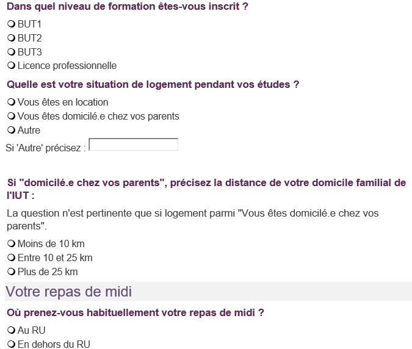
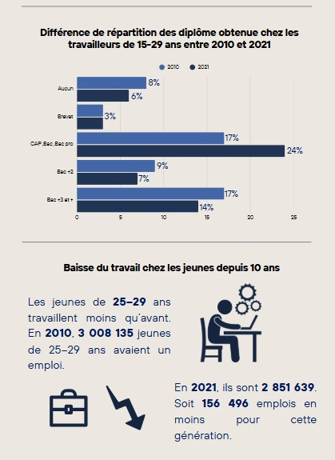

Mes projets universitaires
Création d'un reporting EXCEL/VBA

Ce projet consistait à créer une application sur Excel afin d’optimiser la saisie des notes grâce à VBA.Ce travail, réalisé en binôme, nous a permis de répartir les tâches selon nos préférences, tout en veillant à ce que chacun participe à l’ensemble des étapes afin de nous perfectionner et de progresser.
Gestion de fichiers PYTHON

Autre description brève.
Enquête
Ce projet consiste à regrouper les données issues d’une enquête et à sélectionner les plus pertinentes afin de les mettre en valeur.Le travail s’est déroulé en binôme : nous avons d’abord rassemblé les informations fournies, puis effectué une analyse avant de mettre en commun les résultats obtenus. Ensuite, nous avons réparti le travail restant pour élaborer une synthèse claire, permettant de valoriser efficacement les résultats, accompagnée d’un compte rendu et d’un tableau de bord..
Régression sur R

Ce projet consiste à établir un lien entre de nombreuses variables afin de pouvoir estimer le prix de différents logements.Réalisé en binôme, ce travail avait pour objectif de déterminer les prix des logements avec la plus grande précision possible. Pour y parvenir, nous avons dû identifier un coefficient de corrélation suffisamment pertinent, en nous appuyant sur de nombreux calculs et une grande variété de variables. Cette tâche s’est révélée complexe, fastidieuse et longue.
Conception, implémentation d'une base de donnée

Ce projet consiste à créer une base de données et à l’alimenter via une application développée en Python, afin d’aider des sauniers à mieux organiser leur production et leurs ventes.Réalisé en binôme, nous avons d’abord pris le temps de bien comprendre le sujet, puis nous avons réparti les tâches en fonction des compétences de chacun. Après un premier travail individuel, nous avons collaboré sur la partie principale du projet : l’automatisation de la base de données à l’aide d’un code Python, en utilisant des fichiers CSV, le tout de manière simplifiée afin de permettre une utilisation accessible à tous.
Création de graphique avec R

Autre description brève.
Statistiques inférentielles grâce à R

Autre description brève.
Challenge datavisualisation
Autre description brève.